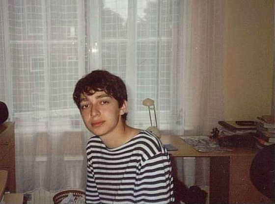

Origin
Miron was born in one of the Leningrad maternity hospitals on January 31, 1985. The now famous rapper comes from an ordinary intelligent family: Miron's father was a professor of physics, and his mother was a librarian. For the first 4 years he studied at the Leningrad school No. 185, after which his father was offered a place in one of the universities in Germany, and the family moved to the German town of Ruttenscheid.
Start
Miron found himself in a foreign environment without knowledge of the German language. In the prestigious school named after Maria Wechtler, where he studied, he was humiliated by classmates who came from wealthy families. He subsequently spoke about his attitude to this difficult period in the song "Last Call". It was rap that became the anchor of salvation, which helped the 13-year-old teenager overcome ridicule and bullying. He composed his first works under the pseudonym MC Mif.
At the age of 15, the guy changed his place of residence again - he moved to the English city of Slough, which at that time was firmly entrenched in the glory of one of the drug trafficking centers in Britain. According to Miron's memoirs, there were many “chavs”, drug addicts and outcasts among the local children, but the young man had only pleasant memories of the local school.
It was the teacher who taught history there who noticed the guy's potential and insisted that he apply to Oxford. At that time, the most prestigious university in the country seemed to Miron something mythically inaccessible; among the other applicants in 2004, despite his good erudition and a worthy certificate, he seemed to himself an "uncouth peasant." Imperfect knowledge of the language, a German accent, and the absence of any social and sporting achievements affected. Apparently, due to innate stubbornness, Miron chose the faculty of English literature, specializing in "literature of the Middle Ages", and nevertheless entered - on the course he was surrounded by native Englishmen from the "top of society".
In 2006, he was diagnosed with bipolar disorder, as a result of which Miron was expelled from the university. However, he recovered and eventually graduated from Oxford, but the grades in the diploma were the lowest possible.
After graduating, Myron rented an apartment on the outskirts of London - this period of life is also often mentioned in his works - and tried to get a job, but it quickly became clear that without the right connections it is not easy even for an Oxford graduate, especially with such an unclaimed specialty and low grades.
As a result, he got a job at a construction site - this decision was not easy, but he needed money to support his family and realize his creative ambitions. Subsequently, he changed many professions - he worked as a tutor, guide, entertainer, worked in the office, unloaded trucks, and even for some time was a "literary negro".
World famous
In the summer of 2010, Oksimiron, together with Schokk and another artist known under the pseudonym Vanya Lenin, Miron created his own label “Vagabund "(translated - "tramp", "wanderer"). As part of this working alliance, he released his first album - "The Eternal Jew", which gained wild popularity among the Russian-speaking audience and the "Discovery of the Year" nomination from GQ magazine.
Together with Shock, Oksimiron went on a long tour of the CIS countries, but soon there was a discord in the team due to a skirmish with rapper Roma Zhigan. After a quarrel, Shock left for Germany, and Oksimiron gave a free solo concert in Moscow, after which he went to London.
For some time he "went underground", but in 2012 he presented his first mixtape "miXXXtape I" to fans, a year later the next one was released - "miXXXtape II: Long Way Home". During this period, he also actively collaborated with a number of prominent Western artists, including the Canadian rapper Madchild and the Germans Automatikk.
The release of Oksimiron's second solo album has been delayed since 2012 and finally took place in November 2015. The disc called "Gorgorod" was a complete conceptual work telling the story of a writer named Mark, and therefore recommended for listening in strict order of compositions, of which there were 11 tracks in the album.
Political views

Oksimiron is active in opposition. In July-August 2019, Oksimiron publicly supported a series of protests in the wake of the exclusion of independent candidates for elections to the Moscow City Duma, and also publicly supported all the detainees, including Yegor Zhukov.
In September 2019, the rapper staged an online performance "Sit down to the text" on Youtube, during which the participants read excerpts from the works of authors of Russian and world classical literature, and then received a "term" for certain passages.
Oxxxymiron now
In November 2021, he released the first track after a long silence - a ten-minute confession "Who killed Mark?", In which again remembered the story of the beating Zhiganom.
On December 1, Oksimiron presented a new album, Beauty and Ugliness, which included 22 new songs, including joint tracks with Monetochka, Aigel, Dolphin. And the album cover was drawn by Boris Grebenshchikov.
The first performances of Oksimiron after a long break were to be held in Moscow and St. Petersburg at the beginning of 2022. But due to the armed conflict in Ukraine, he canceled all concerts:
I am sure you will understand me. I can't entertain you while people are dying. I know that the natural reaction to what is happening right now is despondency and total disorientation, a feeling of hopelessness. But I remind you that if you resist, it will not be with a sad face.
Oksimiron left Russia, but later returned to record a video for his new song “Oida” in St. Petersburg, which spent almost 2 weeks in the world YouTube tops.